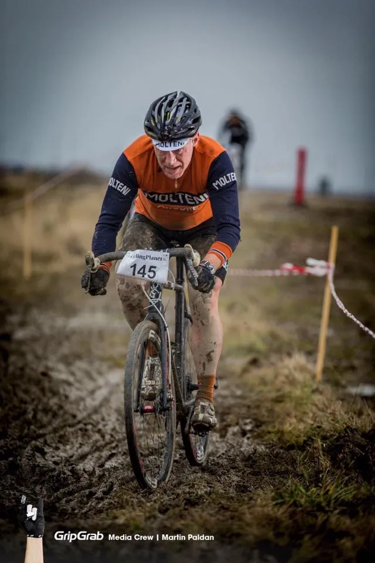

NordhavnsCross er den bedste nytårskur

Inden nytårsaftens indtagelse af den strenge diæt, som holdlægen har beordret alle Squadra Molteni ryttere, deltog Squadra Moltenis Jens Langergaard på årets sidste dag i motionsklassen i NordhavnsCross arrangeret af Cycling Planet.
Loopet var anlagt på en tom industrigrund på Nordhavnen lige ud til vandet. 3,1 km lang, ret flad, men meget teknisk og mudret. Oveni blæste det vel 7-8 sekundmeter. Men derfor kan man jo godt stille til start i korte rør.


NordhavnsCross gav en placering lige udenfor top-10
Jens Langergaard var i 1. række i startboksen da de 45 minutter for fuld skrue blev skudt i gang. Og han fik en fin start og lå efter 1. runde i top 5.
Men ak. På 2. omgang røg Jens først hen over styret i et mudderhul og tabte en placering, inden han var på cyklen igen. Og ikke nok med det. I et sving længere fremme var farten så høj, at cyklen var ude og kante minestrimlen som markerede ruten.
Minestrimlen røg først i hjulet og viklede sig bagefter omkring kassetten. Hjulet måtte af og det tog tæt på to dyrebare minutter at få minestimlen af kassette og bagskifter, alt i mens den en rytter efter den anden kørte forbi.
Det lykkedes dog Jens at køre sig nogle pladser op på de sidste omgange og han fik en samlet 11. plads ud af de 79 startende.